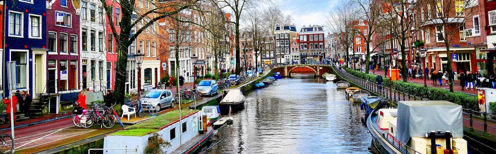

Kubecon Amsterdam Learnings

Kubecon EU 2023 in Amsterdam was a great opportunity to discuss and learn more about emerging trends in cloud-native architecture and engineering. My group TAG App Delivery maintained a booth in the project pavilion and ran a lightning talk series where we met and introduced many project maintainers enabling app delivery and development on Kubernetes and open cloud-native platforms.
It’s already been two weeks since then, so before it gets away from me I wanted to share notes and thoughts on the trends I heard a lot about. Here goes!
Contents
- Portals and platforms work together
- Two levels for Kubernetes APIs
- OCI is about more than container images
- Measure twice!
- Burgeoning CNCF ecosystem
- Maximizing collaboration
Portals and platforms work together
As chair of CNCF’s WG Platforms and lead contributor on our recent Platforms white paper I’ve been talking with folks about the rise of Backstage a lot. I’ve learned that to some folks Backstage or similar projects are a platform; but per the working group’s consensus these are interfaces - portals - enabling better user experiences. They are part of a platform, part of its interface.
At Kubecon I talked with Jorge Lainfiesta of Roadie, Suzanne Daniels of Port and Rajith Attapattu of AppDirector; they and others all seem to agree that our customers asking for portals really want a portal with a backing platform, but the backing platform is an implementation detail of the full experience represented by the portal. A complete platform typically includes an excellent portal to enable users; but a portal without a platform isn’t much more than a fancy manual.
At Red Hat we’re also developing a portal based on Backstage known as Janus to complement our OpenShift and other platforms. My Kubecon conversations have me encouraging Red Hat to thoughtfully decouple our “portal” and “platform” efforts. That is, I believe the same developer portal framework can be applicable to OpenShift, to other Kubernetes distributions, or even to native cloud platforms like AWS and Azure. And the same platform might offer one of any number of portals like Backstage or Ortelius.
Two levels for Kubernetes APIs
In addition to a graphical portal, the other major interface to a platform is its APIs.
I’ve been an advocate of using the Kubernetes API framework for all software-defined infrastructure for a while (see this post). But perhaps Justin Santa Barbara’s short presentation at the TAG App Delivery booth on Wednesday helped crystallize the crux of this position - that Kubernetes APIs are the point of interoperability for software-defined infrastructure.
That is, while Kubernetes APIs are the de facto open standard, they are not and don’t need to be the APIs exposed to platform users and application developers. These users want a reduction of complete Kubernetes APIs, they want small resource representations that “compile to” all the typical (Kubernetes) components required by microservices - service, deployment, certificate, build, image repository, monitoring, etc.
To meet this demand a plethora of projects exist and continue to emerge to reduce Kubernetes APIs to smaller resource types fit for specific use cases. In my opinion Helm and it’s values.yaml “APIs” is an example of this pattern; more modern possibilities include Kratix’s promises and Crossplane’s Composite Resources.
This distinction between full Kubernetes APIs (aka custom resource definitions) and API “views” for platform users leads me to continue to advocate for Kubernetes resources as a “source of truth” and point of interoperability and policy for software-defined infrastructure, while in parallel seeking conventions for the API-reducing frameworks seeking to encapsulate the complexity of those full APIs.
OCI is about more than container images
Another technical trend in CNCF projects is the use of OCI packages for more than container images. TAG App Delivery is forming WG Artifacts to seek synergies in this space.
The Open Container Initiative (OCI) has standardized container image bundles so that they can be extracted and deployed by any container runtime like CRIO or containerd. Building on that success OCI has defined a format for other artifact types to be packaged in the same way - OCI Artifacts. Many projects are adopting this format to bundle more than container images for deployment in Kubernetes clusters.
For example, projects including Acorn, Carvel imgpkg, Helm, Open Policy Agent and Operator Framework all bundle declarative manifests and other binary formats into OCI packages and distribute these via OCI registries like zot, Harbor and ArtifactHub. Like CRIO and containerd in Linux for container images, controllers in Kubernetes unbundle and deploy the contents of these OCI bundles.
The proliferation of OCI-based bundle formats suggests great opportunity for reducing complexity in software development - imagine a day like my friend Steve Lasker does here that all software artifacts and dependencies are bundled in the same package types and searched and verified in a standard way.
WG Artifacts is being started in TAG App Delivery to bring together these various projects. An early goal for the group is to enable consistent search for metadata about these many artifact types, such as verifying attestations and SBOMs.
Measure twice!
The goals of cloud-native observability have expanded beyond optimizing for performance and user experience. We’ve realized we should measure other observable aspects of our systems too like costs and energy or carbon consumption. Projects like Kepler and OpenCost and committees like TAG Environmental Sustainability are emerging to rationalize and speed adoption of these projects.
These new observable aspects of our systems will be gradually integrated into existing suites so that developers and product managers can monitor costs and environmental impact in the same dashboards as performance and user experience. As a corollary, a theme I noted in observability discussions is correlation, i.e., the ability to gather related observations for analysis, such as the energy consumption of a specific subsystem at the time of an error.
Burgeoning CNCF ecosystem
The proliferation of projects in CNCF and the need to understand and support them was a theme of keynotes from CNCF leaders. I was inspired by ideas for encouraging new contributors from Dawn Foster and Emily Fox and wrote up a new CONTRIBUTING.md doc for TAG App Delivery based on discussions at our booth.
I personally lead TAG App Delivery cause I believe cloud-native projects will better succeed in enabling end users when these projects and users are aware of each other and adopt similar patterns and practices. We don’t want to slow down individual projects and innovations, but we do want to facilitate cross-pollination, ultimately to reduce complexity and ensure adoption and usability of projects by end users.
Stated from another perspective, we must recognize and appreciate the effect of Conway’s Law on CNCF’s ecosystem and take some steps to reduce its impact.
A great example of this potential synergy is the composition of Crossplane resources, Knative services, and Dapr capabilities as described in Mauricio Salatino’s posts like this one. That synergy crystallized for many of us (IMHO!) in discussions at Kubecon Detroit in October 2022.
The discussion of project growth also reminded me of one of the values I find in participating in CNCF - exposure to lots of new ideas and projects like those pending for sandbox. At Kubecon alone I learned more about projects K8sGPT, a tool for diagnosing cluster problems; Microcks, a tool for mocking microservice APIs; Paralus, a multicluster authorization gateway; and kpt, a compiler of sorts for reduced “Kubernetes” APIs. And I also learned about future sandbox projects gimlet.io and clastix, to name just a few!
Maximizing collaboration
I often say the COVID-19 pandemic helped me appreciate the value of interpersonal relationships and in-person meetups. I’m quite introverted yet the difficulty in sharing ideas and projects during that time led me to recognize the importance of conversations, meetings and informal sharing in order to develop shared understandings and progress together.
In TAG App Delivery, ongoing conversations in CNCF Slack together with two monthly video meetings and two yearly in-person meetings help us develop shared ideas and hopefully reduce complexity for project maintainers and users.
With so many technical and project/product leaders together at our two annual “Cloud Native” conferences I hope we’ll keep working on maximizing this time together. For example, might we bring TAG leaders and members together at the CNCF project pavilion or in meetups? Might we refine pre-day and auxiliary events so that groups can meet and learn from each other? Can we better enable related projects to find each other and discover opportunities for collaboration?
I hope to pursue these opportunities with other CNCF leads and implement some at Kubecon Chicago - hope to see you there!